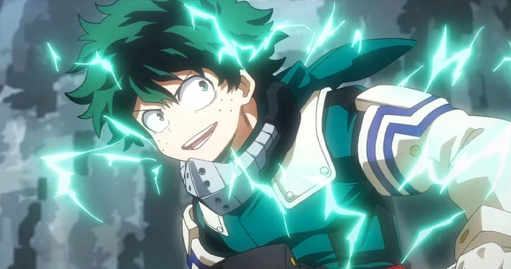

About Deku
Izuku Midoriya is the main protagonist of the popular anime and manga series, My Hero Academia. His Hero name is Deku. He was originally Quirkless but after meeting All Might and impressing him with his bravery, he gained One For All became its ninth user.
A photo of Deku using his powerful querk, "All for one."
Deku's Characteristics
- He’s a very timid and kind boy.
- He’s very polite, caring, and strong-willed.
- Sometimes he can be dramatic, and often he is loud during battle.
Deku's Friends
Let’s start with his first friend: Bakugo. I’m not going to talk much about his friendship, because I talked about it in the last section. So just go read that. But, Bakugo was his childhood ‘friend.’ Because of his narcissistic attitude and Deku’s lack of a quirk, Bakugo easily became Deku’s #1 bully. I already explained how this relationship affected him. Click on the links below to find out more on his friends!!!